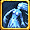
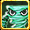
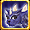

ミニペット合成スキル
基 = 基本型精 = 精霊型
自 = 自然型
神 = 神霊型
全 = 全ての系統
2 = 2次進化
- = 指定なし
| ビッグファイア | - ミニペットの火ダメージ +10％ | ||||||
|---|---|---|---|---|---|---|---|
| - | - | - | - | - | - | - | - |
| ビッグウォーター | - ミニペットの水ダメージ +10％ | ||||||
| - | - | - | - | - | - | - | - |
| ビッグストーム | - ミニペットの風ダメージ +10％ | ||||||
| - | - | - | - | - | - | - | - |
| ビッグアース | - ミニペットの大地ダメージ +10％ | ||||||
| 地全 | 地全 | 地全 | 地全 | 地全 | 地全 | 地全 | 地全 |
| - | - | - | - | - | - | - | - |
| ビッグライト | - ミニペットの光ダメージ +10％ | ||||||
| - | - | - | - | ||||
| - | - | - | - | - | - | - | - |
| ビッグダークネス | - ミニペットの 闇ダメージ +10％ | ||||||
| - | - | - | - | ||||
| - | - | - | - | - | - | - | - |
| レインボーエレメント | - ミニペットのダメージ +5％ | ||||||
| 地全 | - | - | |||||
| 地全 | - | - | |||||
| マッシヴファイア | - ミニペットの火ダメージ +15％ | ||||||
| マッシヴウォーター | - ミニペットの水ダメージ +15％ | ||||||
| マッシヴストーム | - ミニペットの風ダメージ +15％ | ||||||
| マッシヴアース | - ミニペットの大地ダメージ +15％ | ||||||
| 地全 | 地全 | 地全 | 地全 | 地全 | 地全 | 地全 | 地全 |
| 地全 | 地全 | 地全 | 地全 | 地全 | 地全 | 地全 | 地全 |
| マッシヴライト | - ミニペットの光ダメージ +15％ | ||||||
| マッシヴダークネス | - ミニペットの闇ダメージ +15％ | ||||||
| エンシェントエレメント | - ミニペットのダメージ +10％ | ||||||
| 地全 | 地全 | ||||||
| 地全 | 地全 | ||||||
| 太極の環 | - ミニペットのスキル発動確率 +120％ | ||||||
| ヘツルリンステップ | - 基本型ペットスキルレベル +1 | ||||||
| 地基 | - | - | |||||
| 地基 | - | - | |||||
| トゥルーエレメンタル | - ミニペットのダメージ +50％ | ||||||
| 火精 |  水精 | 光精 | 闇精 | - | - | ||
| 火精 | 水精 | 光精 | 闇精 | - | - | ||
| ハイポセンター | - ミニペットのボスへのダメージ +100％ | ||||||
| - | - | ||||||
| - | - | ||||||
| 古代神の残影 | - ミニペットのスキル発動確率 +150％ | ||||||
| - | - | ||||||
| - | - | ||||||
| アドバンスドリメイク 1 | - ミニペットのスキルレベル +1 | ||||||
| 火精 | 水精 | 光精 | |||||
| 闇精 | |||||||
| アドバンスドリメイク 2 | - ミニペットのスキルレベル +1 | ||||||
| 火精 | 水精 | 光精 | |||||
| 闇精 | |||||||
| アドバンスドリメイク 3 | - ミニペットのスキルレベル +1 | ||||||
| 火精 | 水精 | 光精 | |||||
| 闇精 | |||||||
| アドバンスドリメイク 4 | - ミニペットのスキルレベル +1 | ||||||
| 火精 | 水精 | 光精 | |||||
| 闇精 | |||||||
| リアルエレメンタル | - ペットのダメージ +50％ - 精霊型の補助スキルレベル +1 |
||||||
| 光精2 | 闇精2 | - | - | ||||
| 光精2 | 闇精2 | - | - | ||||
| 無極元素 | - 基本型ペットのスキルレベル +1 - 自然型の補助スキルレベル +1 |
||||||
| 水自2 |  風自2 | 地自2 | - | - | |||
| 水自2 | 風自2 | 地自2 | - | - | |||
| 古代神の意思 | - ペットのスキル発動確率 +150％ - 神霊型の補助スキルレベル +1 |
||||||
|  闇神2 | - | - | |||||
| 闇神2 | - | - | |||||
| 古代の民の宴 ? | - ペットの全スキルレベル +1 - ステータス増加スキルレベル +1 |
||||||
| 水自2 | 光精2 | ||||||
| 風自2 | 地自2 | 闇精2 | 闇神2 | ||||
| 古代の民の宴 ? | - ペットの全スキルレベル +1 - ステータス増加スキルレベル +1 |
||||||
| 水自2 | 光精2 | ||||||
| 風自2 | 地自2 | 闇精2 | |||||
| 古代の民の宴 ? | - ペットの全スキルレベル +1 - ステータス増加スキルレベル +1 |
||||||
| 水自2 | 光精2 | ||||||
| 風自2 | 地自2 | 闇精2 | |||||
| 古代の民の宴 ? | - ペットの全スキルレベル +1 - ステータス増加スキルレベル +1 |
||||||
| 水自2 | 光精2 | ||||||
| 風自2 | 地自2 | 闇精2 | 闇神2 | ||||
| パーフェクトエレメンタル | - ペットのダメージ +50％ - 精霊型の補助スキルレベル +2 |
||||||
| 光精2 | 闇精2 | - | |||||
| 光精2 | 闇精2 | - | |||||
| 星煌元素 | - 基本型ペットのスキルレベル +1 - 自然型の補助スキルレベル +2 |
||||||
| 水自2 | 風自2 | 地自2 | 闇自2 | - | |||
| 水自2 | 風自2 | 地自2 | 闇自2 | - | |||
| 古代神の現身 | - ペットのスキル発動確率 ×150％ - 神霊型主人の補助スキルレベル +2 |
||||||
| 闇神2 | 幻神2 | - | |||||
| 闇神2 | 幻神2 | - | |||||
| ドリームファンタジー | - ペットの物理ダメージ +10％ | ||||||
| - | - | - | - | ||||
| - | - | - | - | - | - | - | - |
| メッシブファンタジー | - ペットの物理ダメージ +20％ | ||||||
| - | - | - | - | - | - | - | - |
| 陰陽融合 | - ペットのスキル発動確率 ×150％ - 神霊型主人の補助スキルレベル +2 |
||||||
| - | - | - | - | - | - | - | - |
| 陰陽調和 | - ペットのスキル発動確率 +150％ - 基本型ペットのスキルレベル +1 - ペットのダメージ +50％ - ペットスキルレベル +1 |
||||||